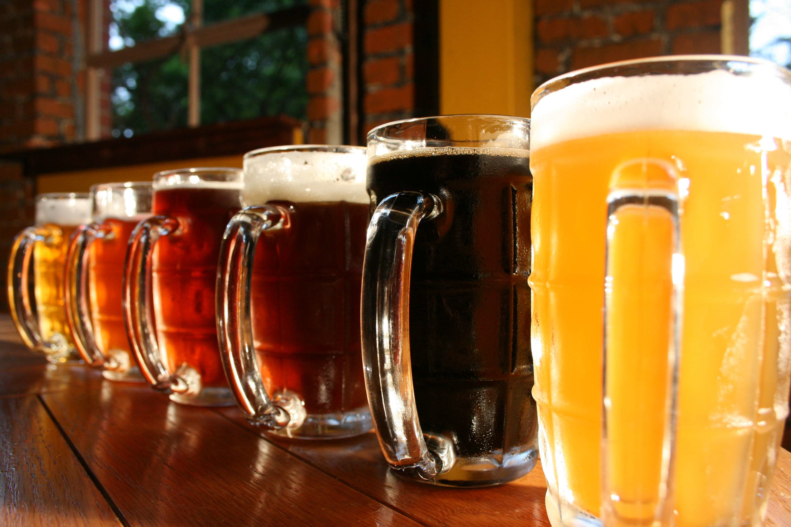
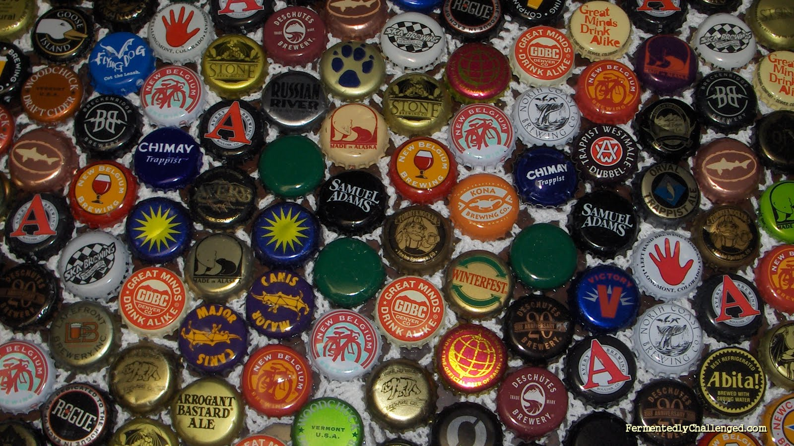

Sud Sensei
Finding your hoppiness one brew at a time

local_drink
[BREW LOCATOR]
City:
Search
Clear
Brewery Name
Location
Phone
Website
local_drink
[SWEEP THE KEG]
Name of a Beer:
Beer Information
Beer Search Results:
